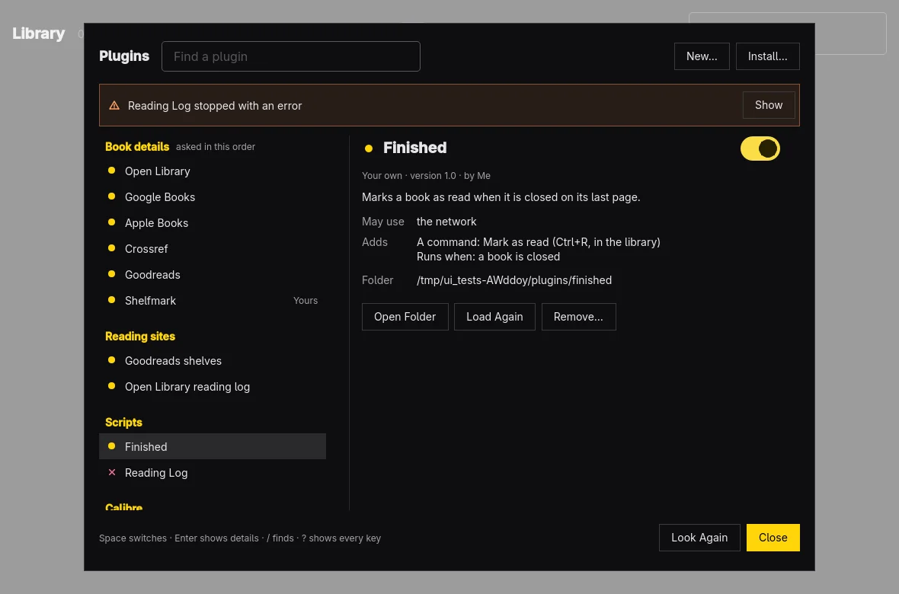

Documentation / Plugins
Plugins
P opens the plugin manager; omabook plugins lists the same. Plugins are sorted by what they do, with a quiet mark for each one’s state: on, off, needing something or broken.

Install one
I opens Find plugins, or run omabook plugin search and omabook plugin add storyteller. Omabook shows what a plugin asks to be allowed before anything is installed. Plugins installed from GitHub update themselves when the update asks for nothing new, and can be rolled back. The plugins page lists what is available.
Storyteller
Writes you a book. Say what you are in the mood for: it builds a world, invents the people, plans a plot with twists seeded before they pay off, and writes chapter one. The next is written while you read the one before. Everything it writes is original by rule. It is also a worked example of a plugin. See Storyteller.
Notebooks
Notebooks of pages on paper: lined, squared, dotted, music staves or Cornell. Write with a pen, type, add pictures and recordings. Handwriting is read, recordings are transcribed, and a page links to the passage you were reading. Export as PDF or Markdown. Notebooks are private books: they stay in your own collections and on your own computers unless you let one go. See Notebooks.
Write your own
N in the plugin manager starts one from a template. A source of book details is a folder with a plugin.json and a program in any language; Storyteller is a worked example of a full script plugin.